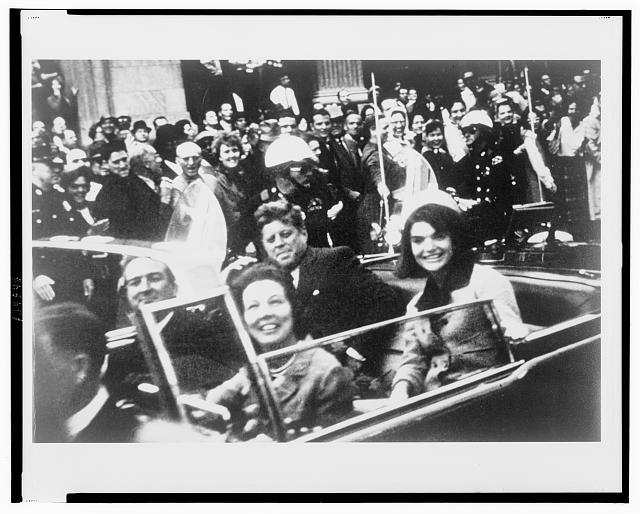

Ankunft
Das Präsidentenflugzeug landet auf dem Flughafen Love Field.
Am 22. November 1963 wurde der Präsident der USA während einer Autokolonne in Dallas tödlich verwundet. Was haben die Untersuchungen ergeben, welche Beweise sind erhalten geblieben und warum bleiben manche Fragen umstritten?

Wählen Sie ein Ereignis aus, um eine kurze Übersicht zu lesen. Zeitangaben sind dort annähernd, wo die Quellen voneinander abweichen.
Das Präsidentenflugzeug landet auf dem Flughafen Love Field.
Die Kolonne passiert die Dealey Plaza; der Präsident wird tödlich verwundet.
Im Parkland-Krankenhaus wird der Tod des Präsidenten verkündet.
Jack Ruby verletzt den festgenommenen Lee Harvey Oswald tödlich.
Die Präsidentenkolonne kam auf dem Flughafen Love Field an. Kennedy und die First Lady Jacqueline Kennedy fuhren in einer offenen Limousine auf der geplanten Route durch die Stadt.
Nicht alle Bestandteile des Falls haben denselben Beweisstatus. Öffnen Sie die Karten für Erläuterungen und Einschränkungen.
Oswald arbeitete im Texas School Book Depository, von wo aus gemäß der offiziellen Version geschossen wurde.
Ein Amateurfilm hielt die Kolonne und den Moment des Anschlags aus einer Beobachtungsposition an der Dealey Plaza fest.
1979 hielt ein Ausschuss des Kongresses den Mord für vermutlich das Ergebnis einer Verschwörung, auch gestützt auf eine akustische Analyse.
Die Ermittlung brachte das im Gebäude aufgefundene Gewehr mit Oswald und den Schüssen auf die Kolonne in Verbindung.
Die Kommission von 1964 kam zu dem Ergebnis, dass Oswald Kennedy ermordete und allein handelte.
CIA, Mafia, Kuba und andere Kräfte tauchen in populären Theorien auf, doch die Existenz eines konkreten Auftraggebers ist nicht bewiesen.
Wechseln Sie zwischen den Versionen. Hier werden offizielle Ergebnisse, das Fazit der späteren Kommission und unbelegte Vermutungen unterschieden.
Die offizielle Untersuchung kam zu dem Ergebnis, dass Lee Harvey Oswald aus dem Schulbuchdepot auf den Präsidenten schoss und nicht im Rahmen einer bewiesenen Verschwörung handelte.
„Fragen bleiben. Doch Fragen sind noch kein Beweis für eine Verschwörung“.
John F. Kennedy wurde am 22. November 1963 in Dallas ermordet. Die Warren-Kommission benannte Lee Harvey Oswald als den einzigen Schützen. Der Sonderausschuss des Repräsentantenhauses für Attentate nahm 1979 eine Verschwörung an, jedoch stellte eine spätere Überprüfung der akustischen Daten eines der zentralen Argumente dieser Schlussfolgerung in Frage.
Ein historisch sauberer Ansatz trennt Primärquellen und gesicherte Umstände von Interpretationen, Gerüchten und unbewiesenen Anschuldigungen. Bis heute gibt es keine allgemein anerkannte, bewiesene Antwort auf die Frage nach einem konkreten Auftraggeber des Mordes.